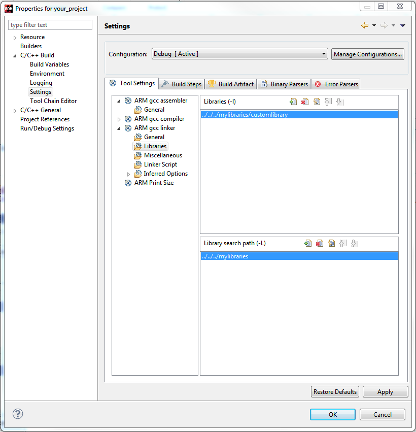

You can create custom libraries for common utilities and use them in the application
projects. To use the custom libraries in an application project, do the following:
Create a custom library using the New Library Project wizard.
For more details, refer Creating a Library Project.
Select the project for which you want to include the custom library, in the
Project Explorer view.
Select Project > Properties.
The Properties for <project> window appears. The left
panel of the window has a properties list. This list shows the build properties that apply
to the current project.
Expand the C/C++ Build property.
Click on Settings.
Under Tool Settings tab, expand the gcc compiler list.
Select Directories to change the add the library header file path. You can now
include the required header files from the library project to the application.
Expand the gcc linker list.
Select Libraries to add the custom library and the library path
to the application project.

Click Apply to save the settings.
When you finish updating the tools and their settings, click
OK to save and close the Properties for
<project> window.